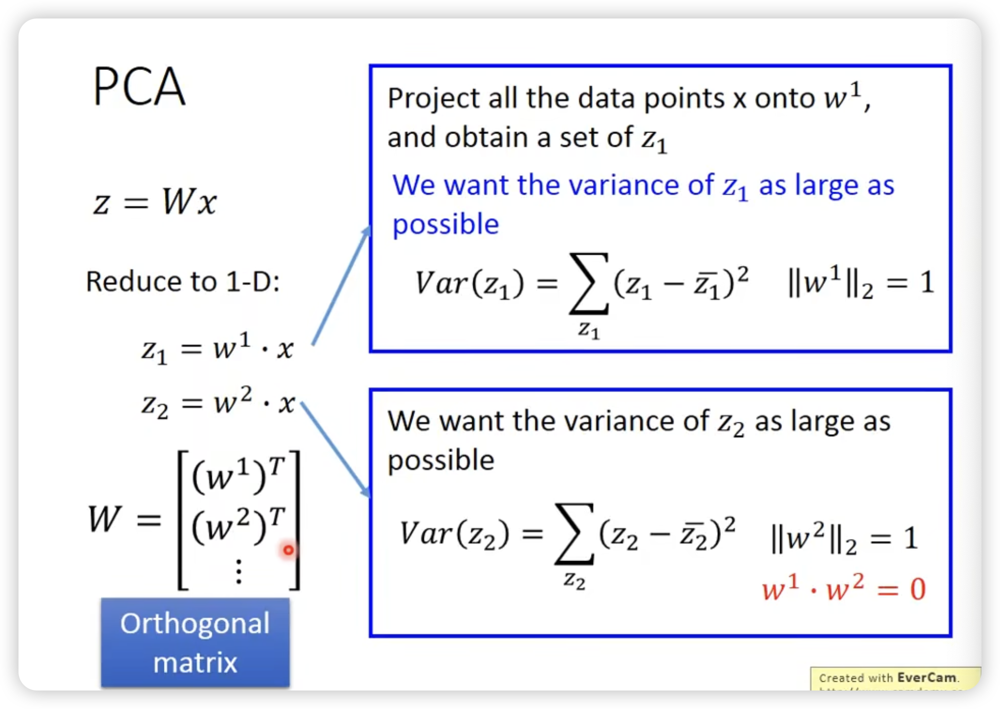
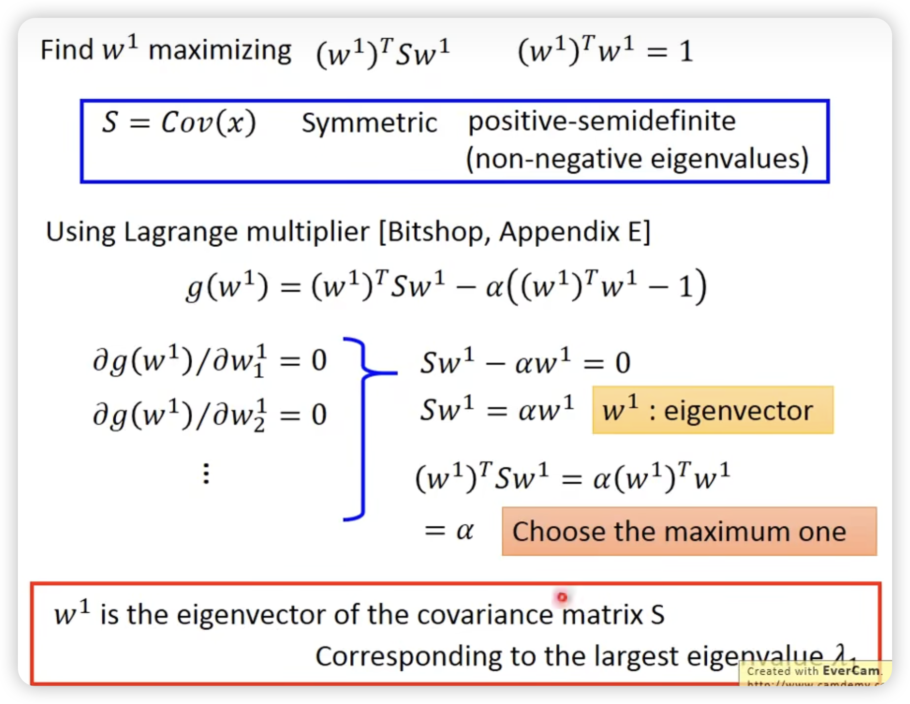
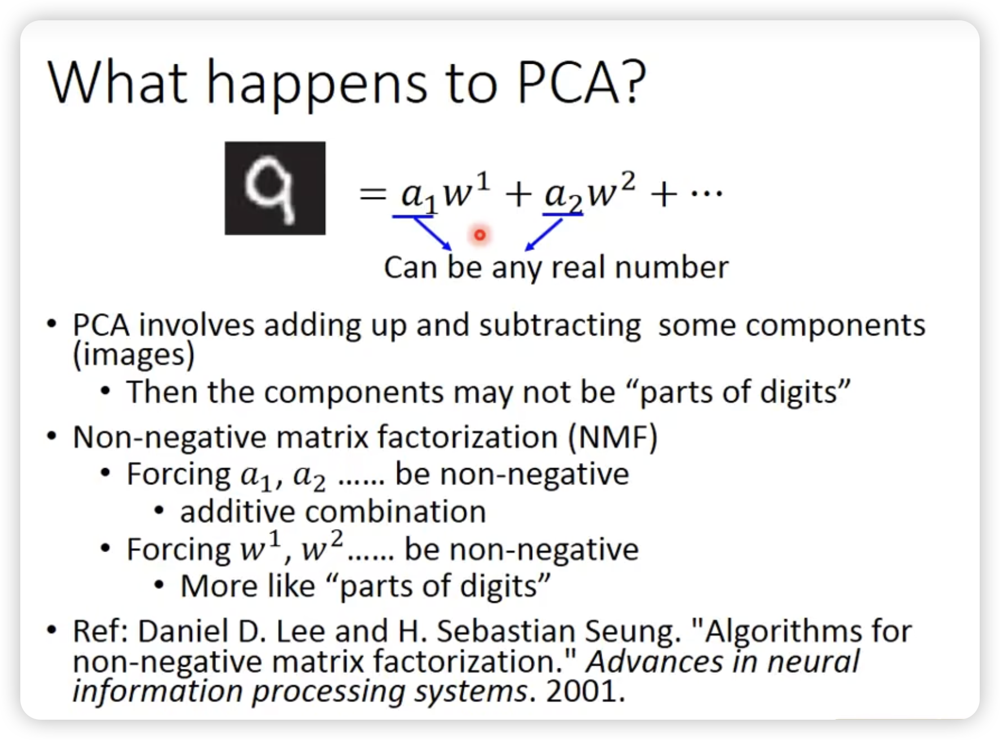
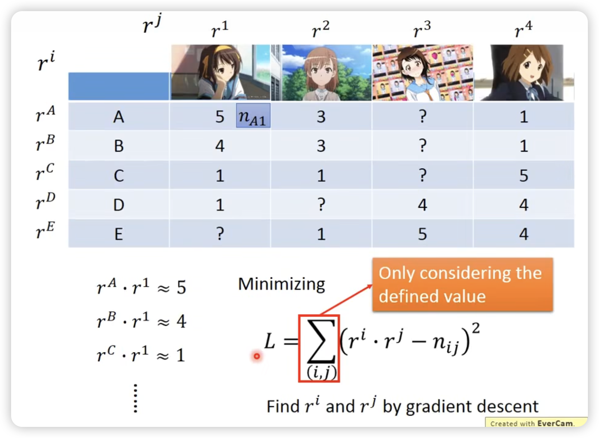
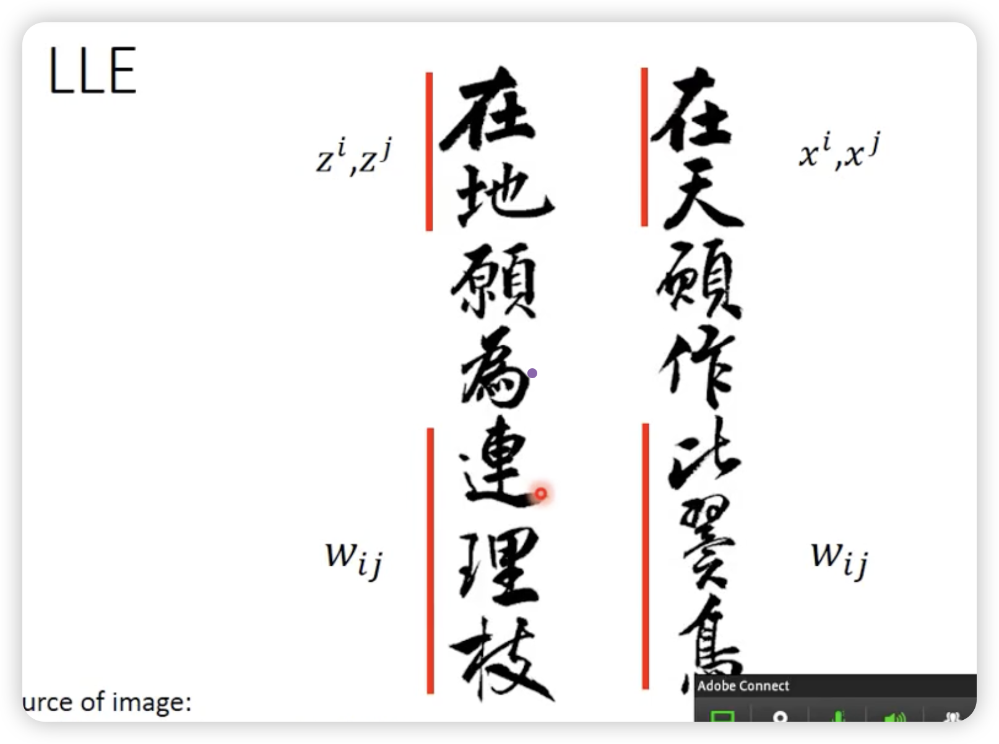
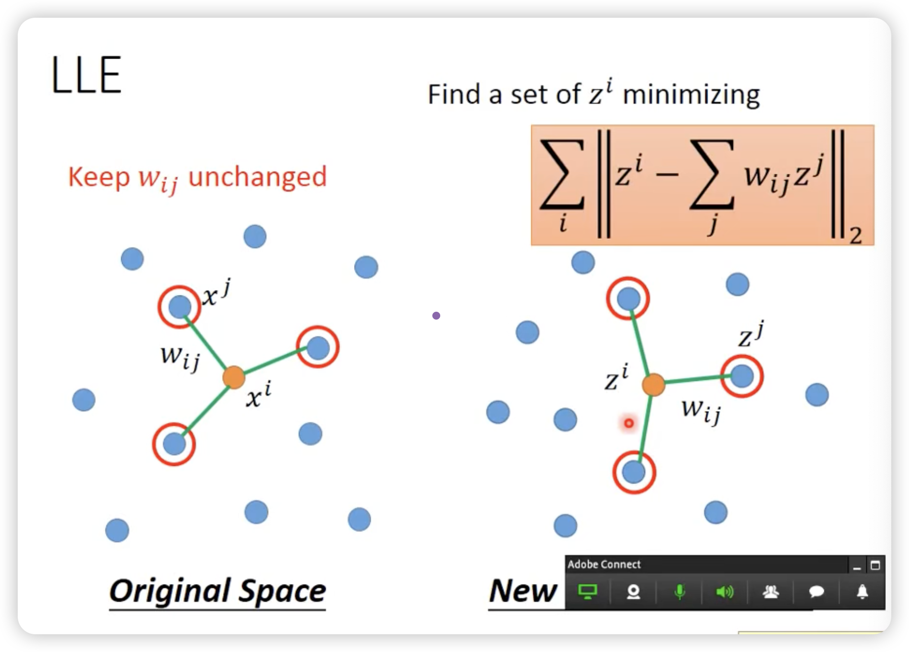
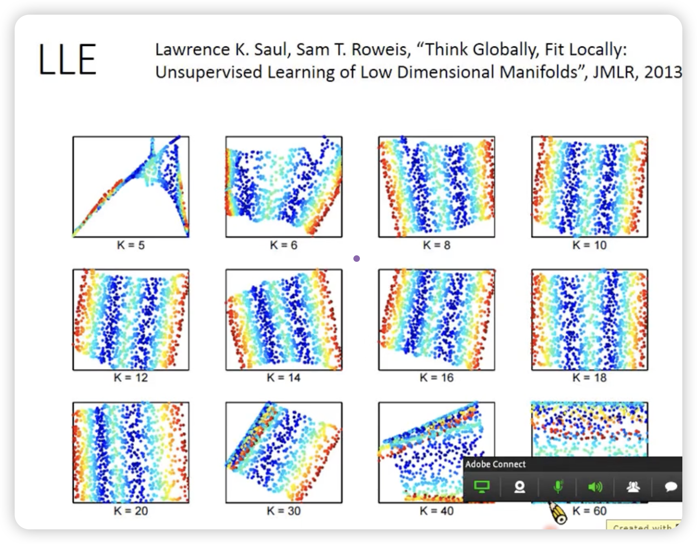

Unsurpervised Learning
Unsupervised Learning
分为两类，降维和生成。
-
K-mean
一开始从training data里sample出k个点init，然后不断迭代，更新每个点的位置，使得每个点周围的点尽可能的接近它。 -
Hierarchical Agglomerative Clustering
每次合并距离最近的两个点，直到只剩下一个点。
这棵树上，比较早分支就比较不像（比如root）
然后可以切一刀，划分出不同的cluster类。（可以比较好决定cluster的数量）
但是cluster太过绝对！
Distributed representation <—> Dimension reduction
其实是一样的事情

Demension Reduction
- 去掉无用feature（很多时候不好用）
- PCA(Principal Component Analysis)
PCA
z = Wx
目的：找这个W
需要project到几维是自己决定的
如何解PCA ？

新的z的feature的Cov是diagnal的！！！
很多比较简单的model需要这个要求（不同feature之间没有corelation），避免overfitting
另外一个理解PCA的视角
甚至可以表示为一个一层的neural network


PCA可以做加法，也可以减法。意味着很大情况下不是各个component的相加。（比如多画一些，再剪掉一些其它的component）
不让做减法的话，就是LDA（Linear Discriminant Analysis）
保证所有值都是正的，只让做加法的组合。
这里的正负指的是component的系数，而不是component本身的正负。
Matrix factorization
对于有missing data的情况，可以用gradient descent设计loss时不考虑来规避。
结果：
甚至可以反过来填充未知单元格，这个思路可用在推荐系统中。
Manifold Learning
LLE(Locally Linear Embedding)
一般在曲面上，欧式距离近的点对不一定是相似的。
我们使用manifold learning来摊平这个曲面，去做更准确的降维。
找一组wij，确定原始空间的邻居关系，使得在新的降维空间中的邻居关系尽可能的保持。
LLE并没有一个明确的function去做降维，Z就是完全凭空找出来的，这样一个好处就是只知道x的关系，就可以找到z。
例子：

Laplacian Eigenmaps
不能简单看欧式距离，要看high density的距离，这个距离近才是真的接近。
这张图中的数学公式用于定义一个优化目标函数：
• 是有监督学习的部分，用于拟合已知标签。
• 是无监督的正则化部分，通过最小化 确保标签预测在图结构上是平滑的。
同样的道理用在unsupervised learning上，就是Laplacian Eigenmaps。
但是前面的东西有个问题，只是假设相近的点在降维后也是相近的，但是没有考虑到相远的点在降维后也是相远的。
所以我们需要一个新的方法，t-SNE
t-SNE没有办法做到dynamic的添加x，所以很多情况下，t-SNE只是用来可视化数据。
t-SNE的分布是heavy-tailed的，所以对于原来差距大的点，降维后的差距会更大。